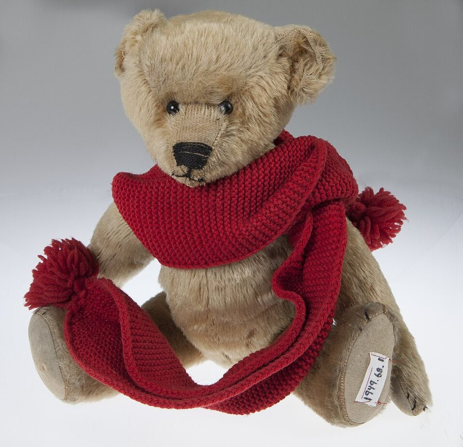
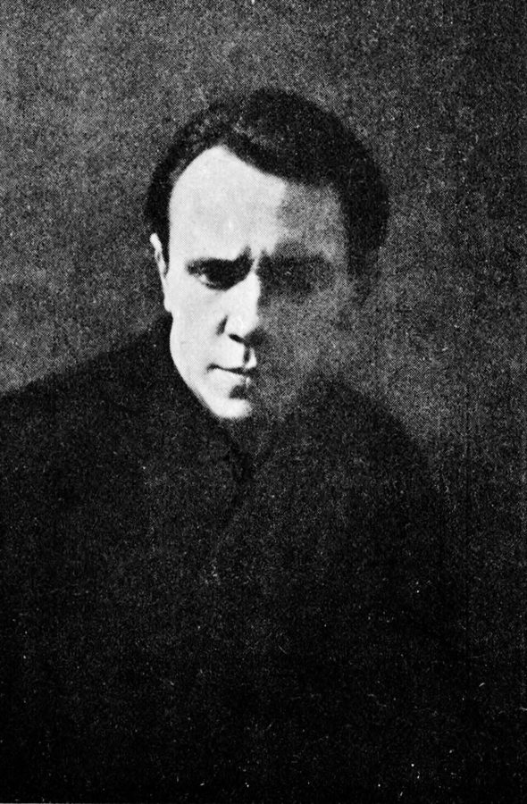
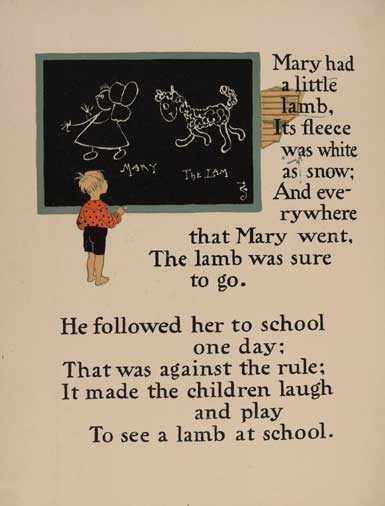
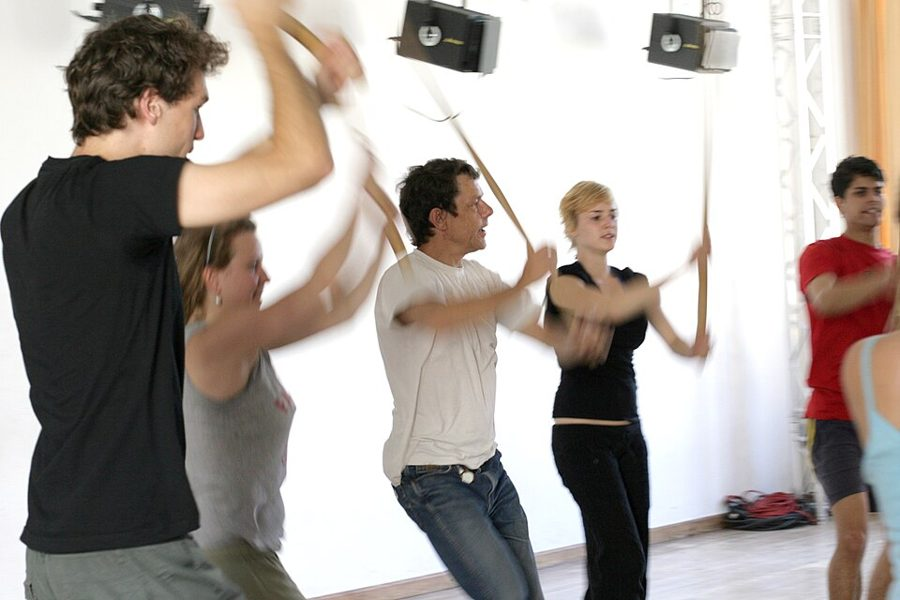

almost as a joke
… it was made almost as a joke …
译本：「它的诞生几乎就是一个笑话」
差不多是闹着玩做出来的
as a joke 是「半开玩笑地」「随手玩一下」。中文「就是一个笑话」容易听成「很可笑、很失败」，其实作者是说本来没打算做面具，一团橡皮泥看着太活了，才当真做下去。
前一页讲面具课怎么上，这一页拿一个面具做完整的个案：作者半开玩笑地用橡皮泥捏出一张脸，他妻子 Ingrid 戴上后，它成了一个会吃冰棍、会抱着泰迪熊不放、会学儿歌、还会长大的「流浪儿」。接着作者给出几条不戴面具也能走的路：龇牙、做鬼脸、把「我」挪到鼻尖上、换一身衣服。读的时候抓两条线：人物是从哪里冒出来的，以及戴的人自己是什么感觉。这一页的练习，有好几个你现在就能试。

上一页（§8）是面具课的操作实录：镜子、道具、给新面具上「语言课」，说新面具像什么都不懂的婴儿。这一页先拿流浪儿把这些说法落到一个具体的面具上：她学数数、学儿歌，正是 §8 说的语言课。§10、§11 换个方向，讲几种更简单的面具和不用面具的入门练习。§15 是全书附录，在译本最后、本篇注释之后，补的是 Ingrid 更早的流浪儿笔记和作者的三个梦。
作者和 Ingrid 写流浪儿时，口气像在说一个真实存在的孩子：「别的东西」进来了，她会长大。这是戴面具的人真实的体验，不是附身的证据。怎么理解它，本站的看法在页末。
一张橡皮泥捏出来的脸，怎么会长成一个会哭、会长大的「人」？
读的时候带着这几个问题。不用先找答案，读完回来对照「检查一下理解」。
§9 是一份个案档案，几乎不议论：先讲面具怎么做出来，接着是作者的现场笔记（冰棍、扫帚、爷爷和泰迪熊），然后整段换成 Ingrid 的第一人称自述，最后作者退一步，从这张脸的形状找原因。§10 突然换成三种别的面具，像一份器材说明。§11 是一串入门练习，中间「安其心」一段跑得最远：从欧洲人把自己放在脑袋里，跳到东方冥想和《不知之云》，再长段引用契诃夫。读完 §11，要翻到译本最后的附录读 §15：先接回流浪儿，最后三个梦没有任何解释，全书就停在那里。
作者落在哪：面具里的人物不是演员想出来的，是从一张脸、两排龇着的牙、一个挪了位置的「我」、一身衣服里冒出来的；给它场景、给它别的面具，它还会长大。作者说他的表演理论大半是从面具里学来的。
这一页是原书和译本「面具与催眠」一篇的第 9 到 11 节，加上全书的附录（本站记作 §15）。粗体是本站给的节名，下面是译本的节号和小标题、这一节在译本电子书中开头的几个字（搜它就能跳过去），再下面是英文原文的开头。每节标了档：「先读」是这本书最精彩、不读就错过的，「有空」好看但跳过不丢线。读完打个勾。
先把这一页用到、作者默认你懂的几个概念讲一遍。讲的是概念本身，作者拿它推出什么，读原书时自己看。
这一页还会用到前几页讲过的：面具（作者大写的 Mask）、面具的激活和关掉、出神、退行、乱语。
平常我们以为情绪先在心里，然后才挂到脸上：高兴了才笑。心理学里有一个反过来的想法：脸上的肌肉动作也会送回大脑，让心情跟着变一点，这叫面部反馈。十九世纪末的威廉·詹姆斯就主张身体的变化是情绪的一部分，后来的实验让人咬着笔逼出笑的形状，看他们是不是觉得漫画更好笑。
日常的例子：拍照时被要求「笑一个」，笑久了好像真有点高兴；咬紧牙关做完一件事，人也跟着狠了一点。要分清两件事：脸能不能「带」一点心情，和脸能不能把你变成另一个人，后者是作者的说法，前者才是实验检验的东西，结果见页末「今天怎么看」。
在这一页：§10 的刽子手靠龇牙，§11 的鬼脸面具靠做一张不像自己的脸，都是从脸往里改；作者说身体和感觉会跟着变。
闭上眼问自己：「我」在哪儿？多数人会指向眼睛后面、脑袋里，也有人指胸口。这个位置是感觉出来的，不是解剖出来的。中文里早就把性格放在身体各处：「心眼小」「有肚量」「眼高手低」「鼻孔朝天」，日本武道和中国气功讲「丹田」，要人把重心沉到肚脐下面。
表演课上把它变成一个练习：想象「我」从一个点出发去动、去说话，再把这个点挪到鼻尖、肚子，甚至身体外面，看走路、语气和心情怎么变。这是俄国演员、表演教师迈克尔·契诃夫的方法，他还有一个配套说法叫「想象的身体」：想象角色的身体像一件衣服，套在自己身上。
在这一页：§11「安其心」一节先说「我」在哪是文化定的，再长段引契诃夫，作者建议读者自己试。
你脑子里有一张自己身体的「地图」：多宽、多高、手脚伸到哪里。它和镜子里的身体不一定一致。刚换了一辆大车，头几天总觉得车身比实际宽，倒车时小心翼翼；拄着拐杖走久了，拐杖尖碰到地也像是自己碰到的：这张地图会伸缩。
今天「身体意象」这个词更多用在另一层意思上：一个人对自己身材满不满意，比如节食、身材焦虑的研究。作者这里用的是前一层：自己感觉里的身体轮廓。有人觉得自己是一团、四肢只是几根凸出来的东西，有人对身体的每一处都很清楚。
在这一页：§11「服饰」一节，作者让学生想象衣服就是身体的表面，借这个词解释为什么这一招对大多数人有效。
作者在课上用过、照着就能玩的；个别几张是本站照书里的段落改的，卡里写明了来历。几个人、怎么玩、看什么写在卡片上；「先猜」那一栏是书里的课堂上发生了什么，先自己猜，或者先玩一次，再点开。全书的游戏卡汇总在游戏汇总。
这一页挑了四个不戴面具、一个人也能做的。§11 后面还有三个要一群人的：全班扮动物一起玩、互相抓挠（会出现很退行的状态），像幼儿那样「拍」对方的头，以及一个人全身放松、让别人传来传去、抬起来、在软垫上滚。最后一个作者说很多人会极其「high」，但移动别人的人必须熟练；涉及抬人和身体接触，本站不做成卡片。
译本：「刽子手」
作者说声音会带上一股威胁的粗哑，身体里放出很野蛮的感觉：觉得自己有攻击性、有力、变宽了。有些怎么也进不了半脸面具的学生，练过刽子手以后突破了。他还说女性演刽子手看上去从来不对劲，但龇牙一样会让她们涌起强烈的感觉。
书里的头套视野极窄，戴着走动要清空场地。两个人对着龇牙时，那股攻击感是演戏用的，别动手：作者在 §14 说，他见过有人借着面具真打了自己不喜欢的人。作者把刽子手算作角色面具；在家只练龇牙，不戴头套，真要戴面具进入状态，要有经验的老师带。
译本：「鬼脸面具」
作者说大家做同一张脸时，更容易接受彼此的点子。大多数演员发现身体的动法完全变了；也有人死守着自己，像在脖子里插了一块挡板，脸变了身子不变，老师轻轻点出来就好。脸上的情绪越强，行为变得越多，即兴也越容易。他还拿它当排练手段：随便挑一张脸来演剧本。
译本：「想象的中心」
契诃夫说鼻尖上小而硬的中心会让人好奇、爱打听，甚至爱管闲事；肚子里软而暖的让人自满、踏实，还有点幽默；放在一只眼上，人很快变得狡黠。中心留在胸口，你还是你自己。作者说效果很强，学生都对自己生出的感觉吃惊，排练时有时正好帮演员找到角色。
这是找角色用的练习，走几步、说一句就换。作者在同一节提到，东方的冥想老师让学生把「心」放到身体各处，是用来诱导出神的；契诃夫也说想象的身体能让人被角色「附身」。所以别闭着眼在一个中心里久待、去追那种感觉；觉得不舒服，就把点放回胸口，睁眼走动一下。
译本：「服饰」
作者让他一边动，一边想象这身衣服就是身体的表面，他一下子成了「胖子」。另一例是个胆小的女孩：粉色芭蕾裙、压低的售票员帽、一只鞋，一动就像个发脾气的孩子。她嫌太幼稚要脱，作者叫她别挑剔自己，她穿着演了一场，自信得不像平时。
按在书里出现的顺序排，标题前是节号。只讲到读懂这一页需要的程度。
Ingrid Johnstone 是作者的妻子，流浪儿这个人物是她戴着面具「创造」出来的。§9 里一半是作者的笔记，一半是她写的体验；附录里还有她更早的一份笔记。作者后来专门为这个面具写了一出戏《最后一只鸟》（The Last Bird），在丹麦奥胡斯上演时由丹麦演员 Karen-lis Ahrenkiel 演流浪儿，下一页（§12）还会讲这出戏的排练。留意一个小地方：泰迪熊那场戏，作者的笔记说爷爷回来打了她一下，Ingrid 的笔记说爷爷从背后扑上来把熊抢走了，两人记的细节不一样。
作者说鬼脸面具这个练习「大概」至少可以追溯到科波，口气是猜测，不是考据。
作者说「要是我们像卢克莱修那样，相信大脑是给血降温的器官」，就会把自己放到别处。让大脑给血降温，一般认为是亚里士多德的说法：他把心智放在心脏，大脑只管冷却。作者大概记混了人，意思不受影响。他说的日本人「在肚脐下一掌宽处」，指的是日本武道和禅修里的「肚」（hara）。「Witla Indians」本站没查到是哪个民族，看上下文是美洲原住民的某一支。
《不知之云》（The Cloud of Unknowing）是十四世纪后半一位不知名的英国作者写的灵修指南，教人放下一切关于上帝的念头和形象，在「不知」里去靠近。作者引的是书里那句「哪儿也不去」，本篇注 10 有较长的原文：作者拿它说明，东西方的冥想都教人挪动或者取消「我」的位置。

作者说他是瓦赫坦戈夫（Yevgeny Vakhtangov，1883–1922，前几页讲过的俄国导演）的朋友。§11 里那几大段引文都出自《致演员》，是契诃夫的话，不是作者的。

这首儿歌 1830 年在美国以 Sarah Josepha Hale 的诗发表（作者是谁有过争议），英语国家的孩子几乎人人会唱。通行的第二句是「Its fleece was white as snow」（它的羊毛像雪一样白），第四句是「The lamb was sure to go」（小羊一定跟着去）。流浪儿的版本把第二句的 fleece 去掉了，第四句干脆又唱回「她有只小羊羔」。Ingrid 说她不认 fleece、bound 这类词，大概就是她编了一半词的原因。§8 说过，作者给面具上语言课时爱用数数和儿歌。
读译本时值得翻一下原文的地方：双关、行话、口语，和译本传不出的语气。灰色斜体是原文里的一小段，在英文电子书里搜它就能找到；方框里是译本这一句的译法。译错的放在下一节「译本勘误」。
对着译本读这几节时，下面这些地方会把人读歪。方框里是译本的原句，在译本电子书里搜它就能找到；灰色斜体是英文原文那一处。只收意思错了、反了、漏了的，措辞上的出入不收。全书的勘误汇总在译本勘误。
… Everything the Waif touches she …
译本：「流浪儿对接触到的一切都充满好奇」
原文是流浪儿把碰到的东西都当成别人的，不是「充满好奇」。作者正是顺着这个特点，让爷爷交代她什么都别碰再离开，桌上留一只泰迪熊，这场戏才搭得起来。
… like stepping out of my skin …
译本：「仿佛有什么突破我的皮肤」
原文是 Ingrid 觉得像从自己的皮囊里走出来，去经历一种更流动、更有劲的东西。译本像是有什么东西从外面破皮而入，方向反了，后文「别的东西」进来是另一回事。
… But it’s very passive, this watcher …
译本：「但这个观察者非常冷漠」
passive 是被动、不插手：那个坐在角落里看着的「我」不批评、不干预。「冷漠」带上了感情色彩，读来像她心里有个冷眼旁观的人。
… she can’t always remember what …
译本：「她总是记不住那东西做了什么」
can’t always remember 是有时记不住。译本说成每次都忘，把出神后的失忆说重了。读到出神的说法时，这个分寸要留住。
… that could have been Ingrid but …
译本：「所有英格丽德没有的外表和感觉」
原文：所有本来可能长成 Ingrid、却没有长成的样子和感觉。她的意思是面具让人试一试自己没走的那些路，后面才接「一个人能长成的人格数量有限」。译本只剩「她没有的」。
… Ingrid found that the Mask work helped …
译本：「面具创作有助于她成为一名即兴演员」
Mask work 指戴面具上课、练习这件事，译本这几节多作「面具创作」，有时又作「面具作品」，容易读成做面具的手艺或成品。读到时一律理解成「面具练习」。
… likely to trigger parental feelings …
译本：「很可能会触发佩戴者父母般的情感」
原文没说「佩戴者」。扁平的脸、高额头是婴儿的长相，触发的多半是看的人的父母心；这一句和后面讲眼睛、嘴唇的几句，都是在解释别人看着它为什么觉得是个孩子。
… a faint orange lip is painted …
译本：「露出的淡橙色下唇就像是被涂在面具上一样」
原文：面具下缘盖住戴的人的上唇，那里真画了一道淡橙色的嘴唇。戴的人把自己的嘴唇和它对齐、定住，人物才出来。译本说成露出来的下唇「像是」涂上去的，读者会看不懂后面的「对齐」。
… a grimace that shows both sets …
译本：「只露两颗牙齿的鬼脸」
both sets of teeth 是上下两排牙，后文译本也作「两排牙」。照「只露两颗牙」去试会做错。同段下一句的「必须」，原文 bound to 是「必然会」：露出两排牙，感觉自然会变，不是要你刻意去变。
… Some people who find it impossible …
译本：「在尝试了刽子手面具后都有所突破」
原文是有些戴不进半脸面具的人，练了刽子手以后突破了。译本加了「都」，变成人人有效。
… as Executioners, but the grimace also …
译本：「女性从未“正确”佩戴过刽子手面具」
原文说的是女性演刽子手看上去从来不对劲，是观感，不是戴法。这是作者那个年代课堂上的印象，后半句他也承认龇牙在女性身上同样放出强烈的感觉。
… place all your attention on the nose …
译本：「让它不要掉」
原文是把全部注意力放在红鼻子上，并且一直留在那里，这是进入「长鼻」的关键。译本成了提醒别让鼻子掉下来。同段结尾「红鼻子好像拽着他们走」接的就是这层。
… and never do what they are told …
译本：「动作快到不听你使唤」
原文是两件事：长鼻动得很快；长鼻从来不照吩咐做，所以要它做什么就叫它做相反的。译本把不听话说成是因为太快，丢了「天生唱反调」这个性格。
… It’s easy to draw gentle attention …
译本：「鬼脸面具很容易引起观众的关注」
原文：有人在脖子那里「插了挡板」，老师很容易轻轻地点出这一点，再鼓励演员让身体想怎么动就怎么动。和观众关不关注无关。
… Witla Indians in the whole body …
译本：「印度人则在全身上下」
Witla Indians 看上下文是美洲原住民的某一支（具体是哪个民族本站没查到），不是印度人。作者是在列举不同文化把「我」放在身体哪里，读成印度会把例子安错地方。
… A centre located a few feet …
译本：「位于眼睛或额头外几厘米的中心」
a few feet 是几英尺，差不多一米开外。照「几厘米」去试，中心几乎贴在额头上，和契诃夫说的「人在身体外面」差得远。
… not continued by more teachers …
译本：「再没有老师继续契诃夫的工作了」
原文：可惜继续契诃夫工作的老师不够多。译本说成一个都没有。1979 年就有人在教，今天更多，见页末「今天怎么看」。
… very regressed states occur …
译本：「就会出现非常原始的状态」
regressed 是心理学的「退行」：退回孩子一样的状态，作者在这一篇里反复用这个词。「原始」会让人想到「原始部落」，和作者的意思不搭。
… Pass them round a circle …
译本：「把他们转一圈」
原文是大家围成一圈，把放松的人一个传给一个，不是让他原地转圈。所以作者紧接着说移动别人的人必须熟练。
… that I really am upset …
译本：「这样我就真的很难过了」
原文：摘下面具，所有人都会看见我哭过，看出我真的难过了。她觉得难堪的是被看穿，不是「这样一来」才难过。
… at getting it back was equally intense …
译本：「她将其拿回来时既喜悦又紧张」
equally intense 是「同样强烈」：拿回熊时的高兴，和熊被抢时的难过一样强。译本多出来一个「紧张」。
… always seems to recognise his presence …
译本：「我似乎总是能辨别出他的存在」
原文的主语是流浪儿：她好像总能认出 Keith 在场，有些话是冲着他说的；Ingrid 说别的面具没有这样。译本把主语换成了「我」，又多出一个「引导」。
… She was puzzled by words like …
译本：「她对诸如“羊毛”和“捆”这样的词感到困惑」
这里 bound 多半是「一定会」：儿歌最后一句说小羊一定跟着去（通行的歌词是 sure to go，课上用的版本可能是 bound）。「捆」在这首歌里没有着落，读者就对不上她改了哪句。
Most of my ‘acting theory’ comes from my study of the Mask— §11。本站译：我的「表演理论」大部分来自对面具的研究。
一句平平的交代，分量很重。前面几篇讲地位、自发性、讲故事，读者以为那是三套独立的方法；这里他说，自己的「表演理论」大半是从面具里学来的。「表演理论」加了引号，是作者惯常的自嘲：他不爱理论，宁可叫它课堂上攒下来的经验。读完这一篇再回头看「不要想、要知道」「别为自己的想象负责」，会发现源头在这里。
We only imagine ourselves as ‘somewhere’.— §11。本站译：我们只是想象自己「在某个地方」。
短短一句，把一个从没怀疑过的感觉拆掉了：「我在脑袋里」不是事实，是习惯。前一句他刚说过，大脑自己连头骨内壁都感觉不到。口气是下判断，没有给证据；它为后面挪动「中心」的练习铺路，你一旦接受「我」的位置是想象的，挪一挪也就不奇怪了。
读完这一页的几节再看。下面是作者在这几节里的主张，由本站按主张重新组织，不按原书的顺序；每条后面是节号，拿不准就回书里那一节再读一遍。
流浪儿出自一团随手捏的橡皮泥，作者说旁人的反对让他知道这张脸「让人不安」。他从脸形找原因：扁平、高额头像婴儿，两眼分得开像在望远处，两眼不平大概是她总扭来扭去的原因；每个戴它的人都把上唇对齐面具上画的嘴唇、定住，丹麦演员也是这样一下子找到人物的。
§9作者安排流浪儿去见那个爱拿棍子打人的老头面具，泰迪熊那场之后，爷爷变得护着她，和别的面具也处得好了，他把这叫「教化」。Ingrid 说流浪儿起初像六七岁，后来像十三四岁；附录里她学数数、学儿歌，正是作者给面具上的语言课。
§9、§15这是 Ingrid 自己的说法。她起初怕在全班面前显得脆弱，流浪儿不怕感受情绪，也不在乎观众；摘下面具后那种释放还在，但不戴面具她做不到。泰迪熊被抢那次她真的哭了，她说不戴面具只会「演」难过，并由此看出自己把不快压得有多深。
§9、§15作者说他的「表演理论」大半来自面具，并给出一串入门：龇两排牙，做一张不像自己的脸，把「我」挪到鼻尖或肚子，想象衣服就是皮肤。他在课上看到大多数人的身体和行为跟着变，也有人在脖子那里「设卡」。他认为「我」在头里是欧洲文化教出来的，人只是想象自己在某处。
§10、§11合起来：作者想让读者看到，人物不必靠「想」出来：先改脸、改身体、改「我」站的位置，人物和感情会自己冒出来；再给它场景和别人，它就像一个孩子那样长大。
这本书 1979 年出版。下面挑出这一页里能被后来的研究检验的说法，分「书里 / 当时 / 今天」三栏，并给一个结论。结论判的是标题里「书里的说法：」后面那一句。全书的这一节汇总在今天怎么看。

读完作者的主张，再看它站不站得住。每一块摆出三样：主流怎么看，作者怎么看，本站的评论。最后一句是本站对这一页的总体判断。
主流看法：心理学不把这类体验当成附身，而是想象投入得很深时的常见感受。2003 年一项访谈 50 位小说作者的研究发现，九成以上说自己笔下的人物至少有时像有自己的主意。看的人那一头也有研究：Lorenz 1943 年提出婴儿的长相（大额头、大眼睛）会引起照顾的冲动，2009 年的实验用照片证实了这一点。
作者的看法：这张脸自己带着人物：做得半开玩笑，大家却觉得它不安；Ingrid 说戴上时「我」有时会消失，「别的东西」进来体验，流浪儿还会长大。§9
本站的评论：作者自己就给了最实在的解释：婴儿般的脸形、分开的眼、画好的嘴唇，戴的人照镜子一对齐，人物就有了一个起点；之后她怎么长大，是作者一场场安排出来的（爷爷、泰迪熊、语言课）。Ingrid 的自述很珍贵，它写的是那种感觉有多真，不是证明真有别人进来。另外，两人对泰迪熊那场记的细节不一样，提醒我们这些都是事后的回忆。
主流看法：实验室里，摆一个表情或一个姿势对心情有作用，但很小。2010 年流行过「摆两分钟强势姿势就能改变激素」，2015 年 200 人的重复实验只重复出了「自己觉得更有力量」，激素和行为都没变。
作者的看法：龇牙、鬼脸、挪动中心、想象衣服是皮肤，对大多数人有很强的改变；他的「表演理论」大半来自这里。§10、§11
本站的评论：两边并不矛盾。实验测的是一个人单独坐着、摆个表情、打个分；课堂上同时起作用的还有游戏的许可、观众、搭档的反应，以及「这不是我，是这张脸」带来的免责（第 4 篇讲过不必为想象负责）。所以它当演戏的工具很好用，也好玩；但别指望龇一回牙就换了性格。他说女性演刽子手「从来不对」，是 1970 年代一个人的印象，不必当成规律。
主流看法：梦有没有意思，心理学至今没有定论：有人认为梦大体延续白天的牵挂，也有人强调做梦时大脑的随机活动，梦里的情节多半是醒后拼凑出来的。
作者的看法：有些梦一来就像口信，醒来鲜明、忘不掉；他把三个梦摆在全书最后，一个字也不解释。§15
本站的评论：下面是本站的读法，你可以有别的：三个梦像全书的缩影。家人假装吃得津津有味的橡皮蛋，像他在别处说的大人那种「死气」；老师们给的珠宝原来是假货，对得上第 1 篇他说的，当了老师就把自己老师的做法反过来；禁止打开的盒子，放出来的蛇散了，底下才是宝藏，像这一篇第 14 节末尾他说的：初学者先放出怪诞可怕的东西，再往下才是温柔。作者不解释，大概正是要读者自己去打开。
本站的总体看法：这一页最值得带走的是那几个练习：龇牙、鬼脸、挪中心、换衣服，安全、好玩，一个人就能体会「从外往里改」是什么滋味。流浪儿是全书最动人的个案，当成一段关于想象力的真实记录读，别当成附身的证据；练习的效果，作者说得比实验测到的大。
先在心里答，再点开。答错的那题，回书里把对应那一节再读一遍。
扁平的脸、高额头可能引起父母般的感情；两眼分得很开，像在望远处，带出惊奇的神情；两只眼不平，可能是她总扭来扭去的原因；面具下缘画了一道嘴唇，戴的人把上唇对齐、定住，人物才出来。
作者说两个面具从此几乎形影不离，爷爷变得很护着她，和别的面具也处得好了。他用这场戏「教化」了这个爱拿棍子打人的面具。
要把上下两排牙都露出来，而且一直咬住这个表情不松。只露几颗牙，或者龇一下就收，体会不到他说的那种变化。
像在脖子里插了一道挡板，脸上的变化传不到身体。老师轻轻点出来，鼓励他们让身体想怎么动就怎么动；实在做不出鬼脸的人，先发一个带情绪的声音，再把那张脸留住。
衣服只是穿在外面，他还是他自己。作者让他边动边想象衣服就是身体的表面，他马上成了「胖子」。作者借此说每个人都有一个和真实身体不一定一样的「身体意象」。
她会什么都「感觉」不到，只是演出难过的样子。这一次让她意识到，自己已经学会把感情压得很深，尤其是不开心的时候。
用一句话说这一页：
想一想：你有没有过换一身衣服、换个发型，就像换了一个人的时候？那一刻变的是别人看你的眼光，还是你自己对身体的感觉？你最想试哪一个「中心」？
读过又忘了，从这里想起来。挑的是这一页最值得记住的故事、游戏和说法，不按原书顺序；每条后面是节号，想细看就回书里那一节。全书各页的这一节都收在全书回顾。
一句话：面具里的人物不是想出来的：一张脸、两排龇着的牙、一身衣服、一个挪了位置的「我」，身体先变，人物和感情跟着来。
作者递给流浪儿一把扫帚，她像抱婴儿一样抱着它，离开时还带走了，管它叫「扫」，好像那是扫帚的名字。
§9爷爷不许她碰桌上的熊，她还是拿了。Ingrid 在面具里真的哭了，心想摘下来大家都会看见；她说不戴面具，她只会演难过。
§15作者叫读者现在就试：上下两排牙龇着不松，环顾房间、走几步。他说人会觉得自己有攻击性、有力、变宽了。
§10契诃夫的练习：把想象的中心放到鼻尖，人变得好奇爱打听；放到肚子，自满踏实。作者说「我」在头里只是文化教的习惯。
§11工装里塞满气球，他还是他；想象衣服就是皮肤，他一下子成了胖子。每个人都有一张和真实身体不一样的「身体地图」。
§11全书最后是三个梦：吃橡皮蛋的家人，老师们给的假珠宝，禁止打开的盒子里蛇散去后露出的真宝藏。作者一个字也不解释。
§15